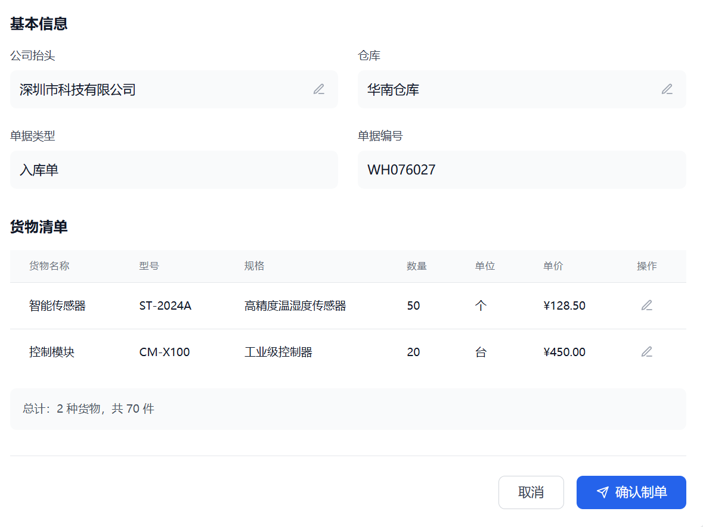

找对客户，再开始联系
围绕航线、目的国、货品与采购特征设置筛选条件，整理潜在采购商与判断依据。
AI Native 企业智能体公司面向货代与跨境业务，打造能够执行任务的行业 Agent。让业务经验、系统工具与人工判断，连接成实际运行的工作流程。
寻找从中国进口家具的英国采购商，
整理线索，并准备首次沟通。
围绕航线、目的国、货品与采购特征设置筛选条件，整理潜在采购商与判断依据。
汇总企业信息、来源与待核实项，让业务员知道为什么值得跟进、还缺哪些信息。
辅助准备开发邮件、整理跟进事项。邮件发送、报价承诺等关键动作保留人工审核。
具体能力与接入范围通过试点确认。以下演示使用示例数据，展示拟议的协作流程。
一个目标，如何变成业务员手中的下一步行动？
选择下方步骤，看看 Agent 与人如何配合。
Agent 根据业务员提供的市场、货品和服务范围，整理筛选条件。业务判断从这里开始。
业务员确定目标，Agent 整理条件。
了解我们如何从业务场景出发，设计工作流、接入系统并安排人工审核。

广州中物储国际货运代理有限公司
方案交付案例围绕仓储出入库单证，将 OCR 识别、大模型语义理解、业务规则和人工质检连接起来，设计从上传、字段提取到制单回填的完整流程。
本案例展示方案设计与交互示例，效率及误差率指标为建设目标。
从实际工作出发，一起梳理流程、接入系统、验证效果。让 Agent 在真实场景中获得反馈，逐步沉淀为可复用的业务能力。
和实际使用者一起梳理工作流程，找到重复、耗时且有明确判断标准的环节。
产出 / 场景与边界围绕一个具体任务开展付费试点，约定样本、人工审核环节与验收方式。
产出 / 可验证的工作流根据试点结果接入所需业务工具，明确使用方式、权限和异常处理流程。
产出 / 上线与使用约定依据真实使用反馈检查任务质量，在约定范围内维护、评测和迭代。
产出 / 改进记录从一个流程开始。合作范围、交付节奏与响应安排，在试点前明确约定。
讨论一个业务场景我们是一支由大厂研发与 AI 一线实践者组成的创业团队，关注企业 Agent 如何走出演示，真正进入日常工作。
从国际货代与跨境业务切入，把工程经验和行业理解放在同一张桌上。我们相信，好用的 Agent，需要在真实流程中反复打磨。
先弄清楚谁在使用、什么值得做，再选择技术与实现方式。
关注信息来源、任务质量与人工审核，让结果能够被检查。
让每次落地都改善同一套产品，让下一次接入更顺畅。